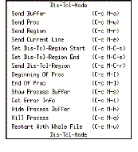
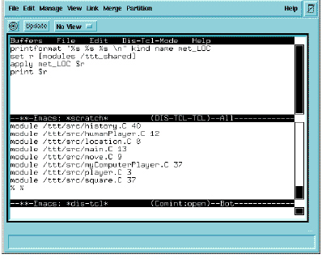

Interpreting the Access Buffer
In an Access buffer, you can construct commands or Tcl-style functions (known as procedures) and send them to the interpreter. The Dis-Tcl-Mode menu lets you send parts or all of the lines in the buffer to the interpreter.

Each option in this menu corresponds with an Emacs command. The Send Buffer option, for example, corresponds with the Emacs command dis-tcl-send-buffer, which you can also execute with Esc-x dis-tcl-send-buffer. For a complete list of Emacs Access menu commands, see the Emacs on-line help (C-h a dis).
Once you start sending data to the interpreter, Emacs opens the interpreter in a second buffer. This buffer shows the final output from your Access instructions, for example:

This example shows the tail end of the output for the four Access commands in the top buffer. The output shows the kind, name, and lines of code (a metric) for each file in the /ttt_shared project.